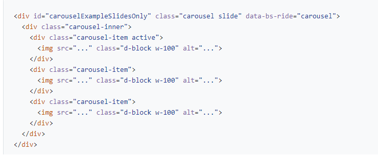
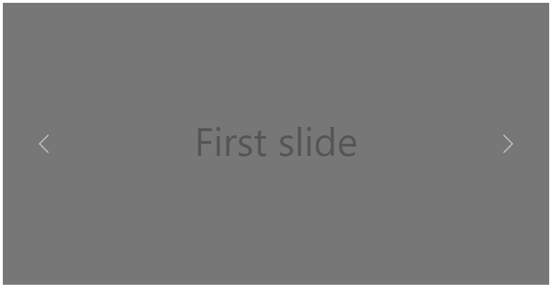
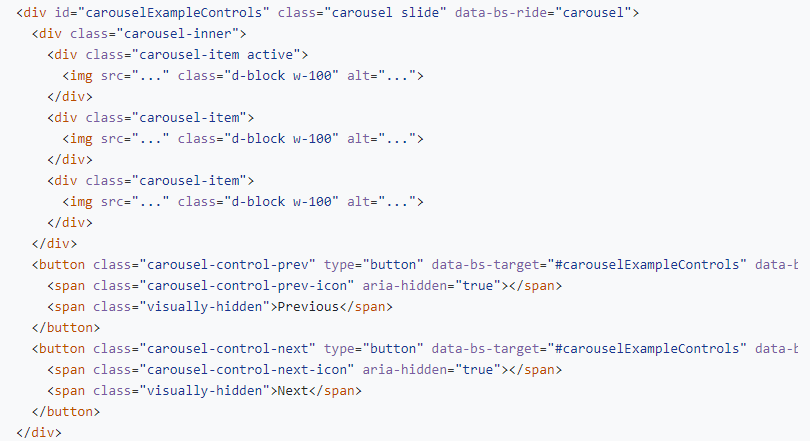
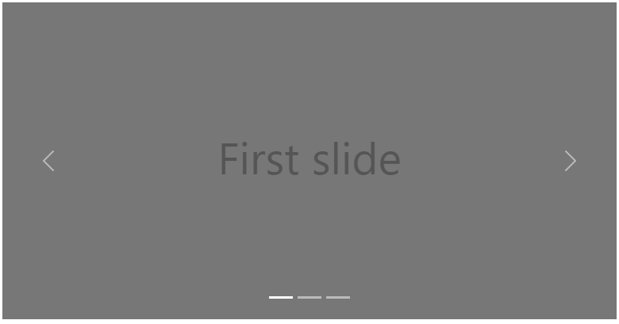
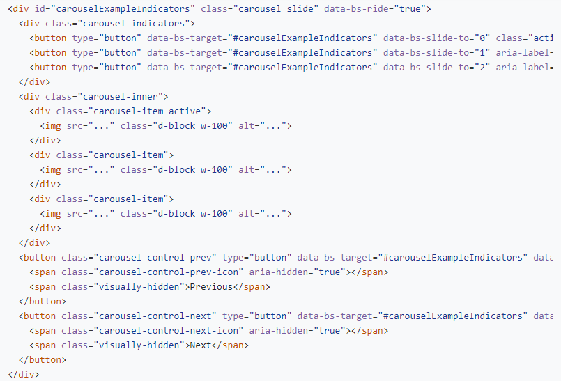
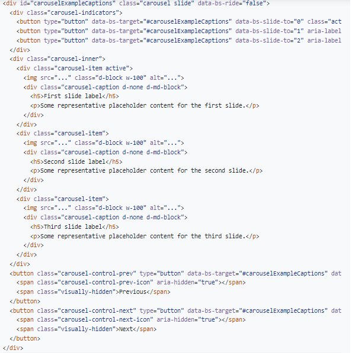
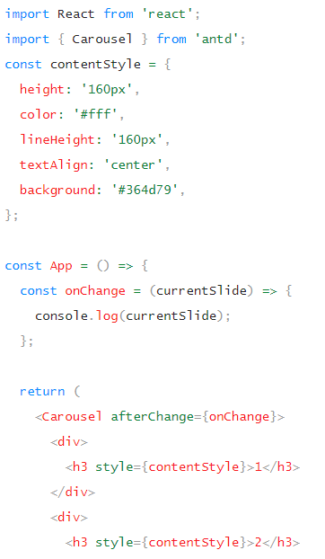
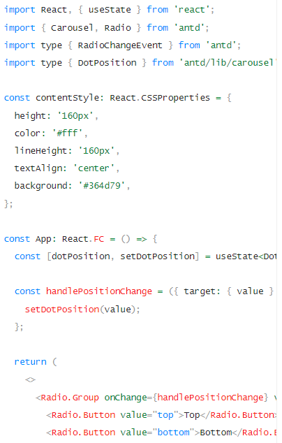

Bootstrap

Kompyuterda bu carouselni bir slidedan ikkinchisiga o'tkazib bo'lmaydi lekin telifonda o'tkazish oson va nechta slidedan iborat ekanligi ko'rinmaydi


Nechta slidedan iborat ekanligi ko'rinmaydi lekin main pagelarga qo'ysa bo'ladi


Yaxshi


Har bir slideni tasvirlash izoh qoldirish mumkin
Ant Disaen

Kompyuterda bu carouselni bir slidedan ikkinchisiga o'tkazib bo'lmaydi lekin telifonda o'tkazish oson va nechta slidedan iborat ekanligi ko'rinmaydi

Nechta slidedan iborat ekanligi ko'rinmaydi lekin main pagelarga qo'ysa bo'ladi